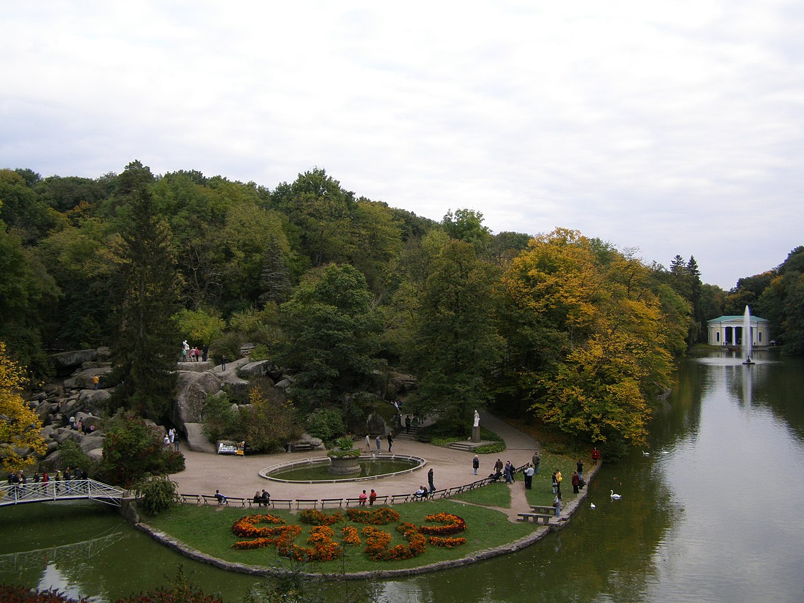
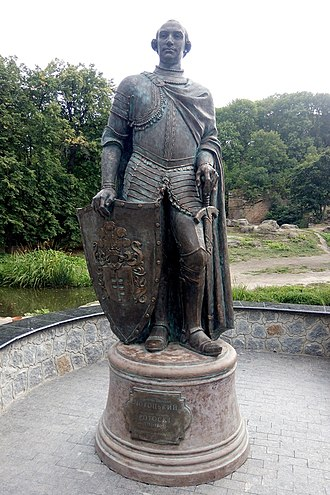
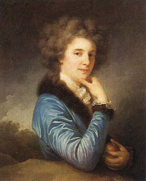
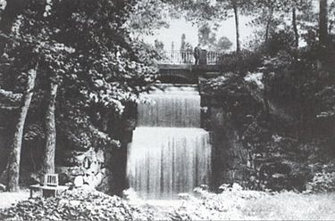
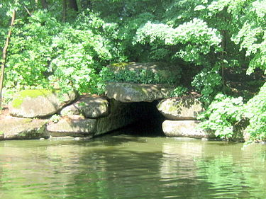
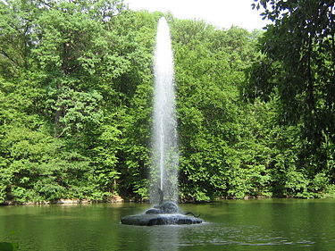

Софіївка
Флора
Тут росте понад 3300 видів дерев і кущів (місцевих і екзотичних), серед них: таксодіум (кипарис болотний), сосна Веймутова, тюльпанне дерево, платан, гінкго та багато інших. Колективом парку видано каталог рослин, в якому нараховується 1994 таксони, з них 1220 деревних і кущових порід та 774 трав'янистих рослин, в тому числі 25 таксонів ліщини, 24 — буки, 41 — ялина, 44 — ялівці, 100 — ліан, 320 — троянд, 57 — рододендронів, 376 — ґрунтопокривних та 98 — квіткових рослин. Колекційний фонд парку в 2007 році нараховував 3323 таксонів, з них: 546 деревних, 1557 кущових, 115 ліан, 1212 трав'янистих рослин, з них 914 інтродукованих та 246 аборигенних.
Розташування
Парк розташований у північній частині міста Умань Черкаської області, обабіч річки Кам'янки, за адресою — вулиця Київська, 12-а. З 1980 року директором дендропарку є член-кореспондент НАН України, доктор біологічних наук, професор Іван Косенко.
Історія
Парк «Софіївка» заснований у 1796 році власником міста Умані, магнатом Станіславом Щенсним Потоцьким та названий на честь його дружини Софії Вітт-Потоцької. Автором топографічного й архітектурного проекту і керівником будівництва парку було призначено військового інженера Людвіга Метцеля. Парк будувався упродовж шести років, і був подарований чоловіком Софії Вітт-Потоцької у день її іменин. Парк був створений у майже безлісій місцевості, розчленованій річкою Кам'янкою, балками та ярами, які врізалися в гранітове підложжя, що часто виходило на поверхню. При створенні парку вдало використано рельєф, але без заздалегідь наміченого плану. У процесі завершення робіт на окремих ділянках були висаджені місцеві та екзотичні деревно-чагарникові рослини, тоді ж були збудовані перші архітектурні споруди та прикрашено «Софіївку» скульптурою, переважно античною. Головна композиційна вісь парку проходить по річищу Кам'янки, де споруджено ряд штучних басейнів та ставів: Верхній — понад 8 га, Нижній — близько 1,5 га та інші, водоспади (один з них 14 м висотою), шлюзи, каскади, підземну річку Ахеронт (завдовжки 224 м), водограї (найбільший — до 20 м) тощо. Також у «Софіївці» є чимало алей і ландшафтних ділянок, таких як: Єлисейські поля, Англійський парк, Мала Швейцарія, Партерний амфітеатр. Парк прикрашають штучні скелі (Левкадська (Бельведерська), Тарпейська й інші), гроти (Венери, «Горішок», «Страху і сумнівів» та інші), павільйони (Флори, Рожевий), альтанки, скульптури. Завдяки компонуванню різних деревних порід, поєднанню їх з водоймами, скелями й архітектурними спорудами, створено види й перспективи різних планів (Головна алея, Англійський парк, Єлисейські поля та інші). Коли Людвіг Метцель закінчив будівництво, в'їзд до парку був з боку оранжерей (тобто, з двору сільськогосподарської академії). Тоді приїздили в «Софіївку» на конях по теперішніх вулицях Тищика і Київській. Польський письменник Станіслав Трембецький у 1806 році присвятив парку поему «Zofiówka», яку сьогодні було перекладено на англійську мову.
Царицин сад
У 1832 році, після польського повстання, частина правобережних володінь родини Потоцьких[1], а серед них і Уманські землі з парком «Софіївкою», були конфісковані й передані Київській державній палаті[2]. Того ж року Микола І подарував Уманський парк своїй дружині — Олександрі Федорівні. В 1836 — 1859 роках «Софіївка» перебувала у віданні Управління військових поселень. Протягом цього часу парк зазнає значних змін, супроти того, що зробив у ньому Людвіг Метцель з самого початку: 1838-го року виникла вулиця Садова. Вона з'єднала парк з містом. Розширилася і була викладена бруківкою Головна алея, одночасно виводиться вода з центру парку до Головного входу. 1844 року тут будуються дві башти в готичному стилі, які за вказівкою Миколи I, який побував тут у 1847 році, були знесені, а замість них під керівництвом уманського архітекта Макутіна за проектом архітектора А. І. Штакеншнейдера спорудили в 1850—1852 роках башти в античному стилі. На терасі Муз засипають грот Аполлона і встановлюють обеліск «Орел». В 1841 році побудовано альтанку «Грибок» та Китайську альтанку. У 1842 — 1845 роках за проєктом архітектора Раппонета будується Павільйон Флори. В 1843 — 1845 роках на острові Анти-Цирцеї будується Рожевий павільйон. Протягом цього часу з парку вилучають бюст Тадеуша Костюшка та скульптуру Юзефа Понятовського. У цей період «Софіївка» називається «Царициним садом». Садівниками на той час були П. Ферре, який створив терасу на березі Нижнього ставу в 1840 році і терасу Муз на північному березі біля джерела Гіппокрени, і Босеє, який відкрив дальню перспективу з амфітеатру на Нижній став, зрізавши верхівки кількох дерев. 
Училище садівництва
30 березня 1859 року царським указом «Софіївку» передано у відання Головного училища садівництва Росії, переведеного з Одеси до Умані. Парк продовжував називатися «Царициним садом», хоч указом царя його названо «Уманським садом Головного училища садівництва». З 1899 року, під керівництвом професора В. В. Пашкевича, парк поповнився новими насадженнями (Англійський парк), де було зібрано понад сто видів і форм рідкісних дерев і чагарників. В цей час проводяться вирубки догляду та санітарні вирубки рослинності. Після революції «Софіївку» стали називати «Садом III Інтернаціоналу».
Державний заповідник
Постановою Раднаркому УРСР за N26/630 від 18 травня 1929 року «Софіївка» була оголошена державним заповідником. Оранжерея, парники і, відповідно, частина території парку залишилися в підпорядкуванні сільськогосподарського університету. Парку надається самостійний статус і він аж до 1955 року перепідпорядковується кілька разів різним відомствам, таким як Наркомос, Наркомзем, управлінню заповідників, управлінню у справах архітектури, які були створені при Раді народних комісарів тодішньої УРСР. 1945 року — парку дано повну назву: «Уманський державний заповідник „Софіївка“». У 1946 році Рада Міністрів УРСР прийняла спеціальну постанову «Про відновлення і благоустрій Уманського державного заповідника „Софіївка“». На ремонт і реставрацію парку виділяється 1 мільйон карбованців. 1948 року — затверджується генеральний план відновлення і розвитку заповідника «Софіївка».  1949 року — створюється декоративний розсадник на площі 20 га. Активно проводяться роботи з ремонту і реставрації малих архітектурних форм, дорожньо-алейної системи, скульптур парку. Проводиться інвентаризація деревних і чагарникових порід, з'являються наукові праці з історії парку, його дендрофлори, про скульптури, малі архітектурні форми. В цей же період втрачено оригінали мармурових скульптур Аполлона Бельведерського, Венери-купальниці, Меркурія, з яких залишилися копії в органічному склі, а статуя Амура, як і бюст Станіслава Трембецького, безслідно зникли, хоч пізніше знайдено мармурові крильця від статуї Амура, які зараз містяться в музеї.
Академія наук
26 вересня 1955 року дендрозаповідник «Софіївка» на підставі Постанови Ради Міністрів України за N 1184 переводиться в систему Академії наук України і підпорядковується в своїй науковій діяльності Центральному республіканському ботанічному саду АН України. В підпорядкуванні ЦРБС АН УРСР парк «Софіївка» перебував аж до 1991 року. В цей період проводяться значні роботи з реставрації об'єктів парку і їхнього відновлення, розширення території парку. Так, в 1958 році за постановою Черкаської обласної Ради «Софіївці» відведено 6,19 га землі за рахунок земель Уманського міськкомунгоспу та 9,5 га за рахунок земель Уманського сільськогосподарського інституту. У парку відновлені і навіть збільшені штати працівників за рахунок наукового відділу у порівнянні з 1836 роком, коли тут проводились найбільші за обсягом роботи. В 1972 році до «Софіївки» приєднують територію площею 5,1 га, яка раніше належала військовій частині. В цей час замінюють всі дерев'яні східці на гранітні, при цьому порушується цілісність партерного амфітеатру як паркової композиції, бо замість серпантинових доріжок, його по центру перетинають гранітні східці від фонтану «Семиструмінь» до оранжерей сільськогосподарського інституту. Проводиться капітальний ремонт Рожевого павільйону із заміною гранітного фундаменту. На Головному вході замість дерев'яної огорожі на цегляних стовпчиках будується ажурна металева огорожа з гранітними колонами. На Головній алеї за проєктом Є. Лопушинської будується в 1974 році джерело «Срібні струмки». В ці ж роки асфальтується бруківка парку від Головних воріт до воріт сільськогосподарського інституту. При цьому прибирають круглу клумбу, яка була перед павільйоном Флори. Від мосту на острів Анти-Цирцеї до дамби по вулиці Інтернаціональній створюють благоустроєну алею з водовипусками, гранітними сходами.
Стихійне лихо 1980
Зима 1979—1980 років була безсніжною та морозною. Товщина льоду сягала понад 0,7 м, а ґрунт промерз на
глибину до 1,5 метрів. Потім у березні 1980 року пройшли великі снігопади, а низька температура повітря
трималася майже до половини місяця. Після різкого потепління в другій половині березня сніг почав
танути. За підрахунками фахівців, приплив води у ставки парку був таким великим, що коли б навіть за два
тижні до стихійного лиха, що трапилося, були повністю відкриті всі водопропускні споруди на ставках, то
і тоді вони були б не в змозі пропустити величезну кількість талих вод, що надходили у водоймища парку.
Повінь розмила земляну греблю по вулиці Інтернаціональній, і вся маса води з Красноставського водоймища
площею понад 17 га у вигляді селевого потоку пронеслась по поверхні льоду Верхнього ставу і пішла вниз
ущелиною по течії річки Кам'янки, де розташовані головні об'єкти парку. Тоді ж під час повені були
повалені гранітні пілони з вазами біля Головного входу. Була дещо зсунута і розвернута по осі на
гранітному цоколі права башта, а також повалена з правого боку майже вся металева огорожа на гранітному
підмурку.
Хоча рослинність парку під час повені зазнала значних втрат (деякі вікові дерева, які прикрашали
центральну частину парку, загинули, а інші зазнали значних пошкоджень), видовий склад насаджень
практично зберігся. При цьому загинули і самосійні, нецінні для паркових пейзажів дерева та кущі. Повінь
пошкодила асфальтове покриття Головної алеї, знищила до основи дорожньо-алейну систему парку в його
найнижчій частині від грота Фетіди до Головного входу з вул. Садової, були знесені і зруйновані всі
металеві та дерев'яні мости, шлюзи, окремі скульптури та малі архітектурні форми. Наслідки повені були
ліквідовані за короткий час.
Відновлення
Найбільші реставраційні, ремонтні та відновлювальні роботи в «Софіївці» було проведено після стихійного лиха в 1980 році, коли за чотири місяці було реставровано понад п'ятдесят об'єктів. За період з 1980 по 1993 рік за проєктом Є. Лопушинської упорядковано Ахеронтійське озеро, збудовано альтанку Грибок. Починаючи з 1980 року, почала освоюватися територія колишньої військової частини площею 5,1 га, де організовується адміністративно-господарча зона парку. Тут практично заново відбудовується 25 гаражів для автомобілів, тракторів і старовинних карет, які закуповуються в Польщі. Було капітально відремонтовано пункт технічного обслуговування техніки, добудовується невеликий лабораторний корпус з кімнатами для приїжджих. На базі колишніх складів боєприпасів, де під час війни німцями був влаштований шпиталь для радянських військовополонених з Уманської ями, збудовано бібліотеку з читальною залою,  їдальню для робітників та службовців з кімнатою відпочинку, зала засідань на 90 місць, складські приміщення, у 1996 році газифіковано котельню, побудовано водонапірну башту, куди подається вода із свердловини, пробуреної в західній частині парку. Збудовано пилораму, столярний цех, сауну, приміщення для утримання коней, овець, птиці. З 1993 року парк охороняється підрозділом міліції. З 1991 року парку надається статус самостійної науково-дослідної установи НАН України. У 1995 році «Софіївка» брала участь в міжнародній конференції «Європа Ностра» і отримала всі відзнаки: медаль, диплом і барельєфну дошку за відновлення парку після стихійного лиха 1980 року, а також за збереження пам'яток історії та культури. До 200-річчя заснування парку в 1996 році відновлено дію джерела «Залізна рура», повернуто його історичну назву. Вода цього джерела надходить, як і 200 років тому, з центральної частини парку із грота «Діани». При вході на територію парку з вул. Садової, зліва, зразу ж за вхідною баштою, розташована гірка, обсаджена ялівцями, туями та ялинами. В цій гірці ще тоді було влаштовано басейн, з якого, як і тоді, так і тепер поступає вода до «Залізної рури» та водоспаду з маленьким блюдцем води, збудованих за проєктом архітекторів інституту «УкрНДІІнжпроект» В. Б. Харченка та О. П. Гуменного. Цього ж року Національний банк України випустив ювілейну монету номіналом у 2 гривні, присвячену 200-річчю заснування парку. 28 лютого 2004 року Указом Президента України за № 249/2004 дендрологічному парку надано статус національної установи, і він став іменуватися Національний дендрологічний парк «Софіївка». За період з 1980 до 2007 рік у «Софіївці» проведено значні обсяги робіт з реставрації, відновлення та повернення історичної достовірності майже на всій території історичного ядра парку. Зокрема: проведено реконструкцію Головного входу, Партерного амфітеатру, Площі зборів, масиву Дубинка, окремих об'єктів Єлисейських полів, Арборетуму ім. В. В. Пашкевича; реставровано обеліск «Орел», «Амстердамський шлюз», «Павільйон Флори», «Китайську альтанку», «Фазанник», «Ахеронтійське озеро», підземну річку «Ахеронт» та «Рожевий павільйон»; відновлено «Грот Аполлона» та інше; у західній частині «Софіївки» на площі 53 га створено практично новий парк з вхідною зоною з вулиці Київської, новою інфраструктурою обслуговування туристів, розарієм та чотирма водоймами, органічно вписаними в ландшафт тальвегу Грекової балки. Впродовж останніх років у «Софіївці» на підставі вивчення основних традиційних елементів теорії декоративного садівництва і використання відповідних композиційних прийомів та принципів проведено: роботи з благоустрою і створення нових паркових композицій, які відповідають сучасним вимогам садово-паркового мистецтва; створено «Меморіальну зону рослинних композицій, посаджених відомими людьми України та світу»; проведено архівний пошук, за яким встановлено архітектурний задум будівничих та відновлено історичні назви окремих композицій та малих архітектурних форм на основі образів з поеми Гомера «Одіссея»; проведено пошукові роботи та розроблено проєкти стабільного забезпечення гідрологічного режиму парку, на сучасному рівні розроблено концепцію благоустрою нової частини парку з розміщенням альпінаріїв, розаріїв, Японського саду у пониззі річки Кам'янки на базі наявного природного середовища з виходами гранітних скель; завершено будівництво правого крила науково-лабораторного корпусу, в якому розміщено сучасний тризірковий готель «Софіївський». Сучасна «Софіївка», бувши зразком садово-паркового мистецтва світового значення, маючи потужну матеріальну базу та високий науковий потенціал і розвинену інфраструктуру з обслуговування відвідувачів, може вже сьогодні стати школою для перепідготовки вітчизняних та закордонних ландшафтних архітекторів.
Нагороди
Багаторічна праця колективу Національного дендрологічного парку «Софіївка» НАН України неодноразово була відзначена на міжнародному та загальнодержавному рівні: у 1995 році адміністрація дендрологічного парку «Софіївка» за найкраще збереження, відновлення й реставрацію пам'яток історії, культури й архітектури стала одним із шести переможців Міжнародного щорічного конкурсу проведеного неурядовою організацією «Європа-Ностра» і нагороджена медаллю, дипломом і пам'ятною табличкою; за розвиток, реставрацію та удосконалення Національного дендропарку «Софіївка» НАН України, Указом Президента України за № 1133/2005 від 26 липня 2005 року авторському колективу у складі: Білякова Юрія Петровича — головного архітектора інституту «Укрпроектреставрація», Гуменного Олега Пантелімоновича — головного архітектора інституту «Укрінжпроект», Єгорова Юрія Івановича — головного архітектора міста Умань, Харченка Валерія Борисовича — начальника відділу інституту «Укрінжпроект», Грановського Геннадія Семеновича — голови ради ЗАТ «Агрошляхбуд», Роголя Ігоря Яковича — директора ПП «Інжпроект-2», Косенка Івана Семеновича — директора Національного дендропарку «Софіївка» Національної академії наук України та Бодрова Юрія Івановича — Уманського міського голови присуджено Державну премію України в галузі архітектури; співробітники парку нагороджені: Державними орденами і медалями України, а також трьома срібними та двома бронзовими медалями ВДНГ УРСР, медалями НАН України, відзначені іменними преміями НАН України ім. В. Я. Юр'єва; міжнародними преміями польського комітету ICOMOS-IFLA імені професора Яна Захватовича нагороджені директор парку, доктор біологічних наук, професор, член кореспондент НАН України Косенко І. С. (2005) та заступник директора з наукової роботи, кандидат біологічних наук Грабовий В. М. (2002). наукові розробки вчених парку підтверджені 16-ма авторськими свідоцтвами та патентами на винаходи; за участь у різноманітних виставкових акціях та конкурсах Національний дендрологічний парк «Софіївка» відзначений: багатьма дипломами, «Кришталевим Рогом Достатку» Міжнародного відкритого Рейтингу популярності та якості «Золота Фортуна», Подякою Державної туристичної адміністрації України, дипломом та статуеткою «100 найкращих товарів та послуг України», а в 2007 році «Софіївку» визнано одним із Семи чудес України.
Акти вандалізму
У 2010 році невідомі розбили статую Венери-купальниці, вкрали понад 10 решіток зливової каналізації. На початку 2016 року відбили голову від статуї Арістотелю, на алеї до фонтану «Змія» розкидали та розбили урни, сміттєві баки та лавочки для відпочивальників. Одна з ваз (вагою бл. 80 кг), яка прикрашає колони, опинилась в озері. Директор Іван Косенко оцінив збитки-2016 в сумі близько 60000 грн.
Об'єкти парку
За задумом архітектора, парк є наочною ілюстрацією до окремих частин поем Гомера «Іліада» та «Одіссея».
Південна частина
Парк починається з головного входу по вулиці Садовій. За ним йде центральна алея. Башти головного входу, споруджені у 1850 — 1852 роках, збереглися до нашого часу разом із в'їзними воротами та хвірткою. Огорожа від башт протягом цих років багато разів змінювалась — від дерев'яної на цегляних стовпчиках до металевої на гранітних колонах, до вигляду, який вона має тепер, разом з реконструйованим мостом, сходами та комплексом для обслуговування туристів, що тепер носить статус Будинку творчості вчених Національної академії наук України. Цей будинок має оригінальну архітектуру, а на вершині будівлі — оглядовий майданчик. Крім музею, в Будинку творчості вчених є готель на 45 осіб, ресторан, сауна.Верхню частину конусоподібної покрівлі вхідних башт завершують прикраси, що нагадують смолоскип. За однією із версій, Головний вхід до парку нагадує вхід в Афінський ринок, а деталі, що завершують сторожові башти, запозичені з храму богині Вести в Тіволі (Італія). Довгий час вхід до парку прикрашали італійські пірамідальні тополі, що їх завіз С. Щ. Потоцький. Саме з «Софіївки» вони розповсюдились по всій Росії (Про це свідчить лист імператора Росії Олександра І до Софії Потоцької, в якому він дякує їй за транспорт із саджанцями пірамідальної тополі, що прибув до Петербурга). До стихійного лиха, яке трапилося в ніч з 3 на 4 квітня 1980 року, головний вхід прикрашали ялиці бальзамічні. Вони загинули, а на їх місце висаджено дві туї колоноподібні 20-річного віку, які добре вписалися в архітектурний ансамбль.Праворуч, біля входу в парк, за стіною туї знаходився будинок Музею історії парку. Він був відкритий у вересні 1985 року. Музей, створений на громадських засадах завдяки ентузіазму працівників парку та його шанувальників, не був розрахований на масове відвідування. Це був методичний центр для підготовки екскурсоводів. В ньому також були зосереджені матеріали з історії «Софіївки». Будинок, в якому був розміщений музей, збудований у 1957 році, до 1980 року використовувався як адміністративно-лабораторне приміщення, а в 1996 році його фонди перенесено до нинішнього адміністративного корпусу, який розташований на території парку. Тепер, з місця, де був розташований музей, відкривається вид на гранітні скелі та невеличке Женевське озеро — яке виникло в 30-х роках XX ст. На території поляни, що вище Женевського озера, в 1841 році була збудована дерев'яна альтанка для караульного солдата. Вона нагадувала по своїй формі грибок, тому місцевість схилу праворуч по ходу в парк дістала назву Грибок. Альтанка відновлена в 1994 році. По центральній алеї парку, на шляху від Головного входу до Тарпейської скелі, праворуч росте група ялин, а також болотний кипарис (таксодій дворядний). Дерева ці посаджені в 1891 році. Раніше цю ділянку парку називали Малою Швейцарією. З історичних архівних матеріалів відомо, що свій завершений вигляд ця ділянка парку набула в період військових поселень, після завершення будівництва вхідних башт. Тарпейська скеля розташована праворуч по ходу Головної алеї. На ній розташована дерев'яна альтанка легкої конструкції, що продовжує скелю. Вперше її встановлено в 1839 році, пізніше, коли постаріла, — зняли, і лише в 1950 році відновили знову. Скеля названа як південно-західна стіна Капітолійської фортеці Стародавнього Риму, яка збереглася до нашого часу. При Потоцьких тут закінчувався парк. Перед павільйоном Флори, праворуч, розташоване джерело — «Срібні джерельця». Оформлення його виконано в античному стилі. Це підковоподібна споруда з граніту, на краях якої дві вази з декоративними рослинами. В середній частині вертикальної стінки вмонтовані декоровані бронзою трубки, з яких тече джерельна вода. Фонтан «Срібні джерельця» був споруджений в 1974 році за проєктом київського архітектора О. І. Лопушинської на місці будки із залізною трубою для випуску води, яка стояла тут з 1850 року. Алея закінчується павільйоном Флори. Перед ним спланована площа, від якої, огинаючи павільйон, розходяться кілька доріг. Асфальтова дорога через Венеційський місток веде до Верхнього ставу і до виходу на територію Уманської сільськогосподарської академії (колишнє Головне училище садівництва), повз оранжереї на видовий майданчик біля обеліска. Звідти по Верхній алеї можна вийти на терасу Бельв'ю і повернутися на площу до павільйону Флори. По цій дорозі, навколо центральної частини парку, можна прогулюватися в кареті. Друга дорога від павільйону Флори підіймається круто ліворуч і догори, веде до вхідної зони в парк з вулиці Київської, до адміністративно-господарської зони парку, до поляни Дубинка і далі в західну частину, де створені сучасні види парку. Нижня алея проходить вздовж берега Нижнього ставу. Зблизька павільйон Флори виглядає вишукано завдяки своїм точним архітектурним формам, високим колонам в доричному стилі та барельєфу на фризі, що зображає листя і грона винограду. Орнамент виконано в 1852 році за малюнками академіка архітектури О. І. Штакеншнейдера. Гранітні сходи ведуть до просторої овальної зали. В проміжках білих колон відкривається панорама Нижнього ставу.
Центральна частина
В основу композиційного рішення центральної частини парку покладені сюжети з міфології Стародавньої Греції та Риму, а деякі місця нагадують оселю грецьких богів, героїв, письменників та філософів. Праворуч від павільйону Флори знаходиться виконаний з гранітних клиноподібних каменів аркового склепіння так званий Венеційський міст. Міст прикрашають гранітні пілони, між якими звисають важкі ковані ланцюги. Трохи нижче мосту влаштовано дерев'яний шлюз для пропуску води в річище Кам'янки. Посеред Нижнього ставу з широко роззявленої пащі змії, що звивається на камені, б'ється стовп води — фонтан «Змія». Вода надходить до фонтану по самопливному підземному водогону, викладеному з гранітного тесаного каменю вздовж дороги, яка веде від академії та оранжереї до павільйону Флори.  Напроти Громового гроту (гроту Каліпсо), знаходиться відстійник та відгалуження водоводу, щоб подавати воду в інтер'єр гроту. Відстояна і таким чином очищена вода по чавунних трубах, укладених під невеликим нахилом, самопливом, що зводить до мінімуму втрату сили тиску при терті води об стінки трубопроводу, подається до фонтану.Діаметр фонтанної голівки «Змія» в порівнянні з трубою водопроводу зменшено в 10 разів. Точно розрахована подача води і просте інженерне рішення виверження її з фонтану забезпечує невелику різницю у висоті між стовпом фонтану і рівнем Верхнього ставу всього лише 1,5—2,5 метри і, таким чином, висота фонтану досягає 12—16 метрів. Спочатку вода фонтану линула в висоту просто з отвору в камені і фонтан називався «Самсон», як і відомий фонтан в Петергофі. Пізніше, в часи військових поселень, на камені була встановлена скульптура змії. Змія була вилита з бронзи невідомим майстром. Якщо її вузол розтягнути в довжину, вона буде розміром в 10,65 м. У центрі на Верхній алеї — статуя Гермеса (у римлян — Меркурій). Ця статуя знаходиться в парку з 1800 року, її встановлювали, як і інші статуї, в різних місцях парку і неодноразово реставрували.В кінці Нижньої алеї розташована на високому гранітному п'єдесталі двометрова статуя давньогрецького поета-драматурга Евріпіда. Він зображений у повний зріст із сувоєм в правій руці і зв'язкою рукописів біля ніг. Скульптура Еврипіда єдина в парку, яку не переставляли на інше місце з часу її встановлення 1800 року. 1996 року всі оригінали мармурових скульптур перенесено в музеї, а на їх місця встановлено копії з гіпсу та оргскла.Далі, біля підніжжя крутого схилу, розташоване джерело Гіппокрени (Іппокрени). За грецькою міфологією, джерело Гіппокрени з'явилося від удару копита крилатого коня Пегаса (звідси «кінське джерело») на горі муз Геліконі в Беотії. Джерело присвячене Аполлону і музам. На квадратному п'єдесталі біля джерела 1851 року було встановлено статую Венери — що купається, яка раніше стояла в гроті Аполлона. Зараз на цьому місті стоїть копія в оргсклі, виконана 1952 року. Нижче від статуї із гранітного п'єдесталу біжить джерельна вода, яка в будь-яку пору року має однакову температуру. Вода наповнює бронзову напівчашу, прикрашену декоративним зображенням вужів, і, переливаючись через її краї, стікає по гранітному підземному каналу в Нижній став. Через нижній став до Площі зборів веде металевий місток — з якого відкривається вид на Великий водоспад. Вода надходить сюди через підземну річку Ахеронт із Верхнього ставу. Побудовано водоспад в перший період створення парку. Площу зборів прикрашають різноманітні архітектурні елементи паркової композиції. Ця назва з'явилася в період, коли «Софіївка» перебувала у віданні управління військових поселень. Того часу в парку в недільні дні грав військовий оркестр і шляхетні люди міста збиралися тут, щоб послухати музику, потанцювати. Але площа створена в перший період будівництва парку. Площа зборів обрамлена дерев'яними лавочками. Знаходиться вона на півострові овальної форми. У центрі площі розташований басейн, посередині якого поміщено велику гранітну вазу. В басейні плавають декоративні риби. Вода в басейн надходить підземною чавунною трубою з Верхнього ставу і тримається на одному рівні, тому що надмір води відводиться в Нижній став через прокладений під землею гранітний канал. Улітку вазу прикрашають яскраві квіти. Біля басейну розташована статуя Паріса. Ліворуч від площі зборів розташований грот. Велика гранітна брила, вагою понад 300 тонн, зависла без опори і утримується лише на трьох точках. Надійність цієї споруди перевірила сама природа. У 1838, 1976, 1986 роках, коли в Умані траплялися значної сили землетруси, грот залишився неушкодженим. Грот називають Гротом страху та сумніву (раніша назва — Грот Тантала). Над Гротом страху і сумніву, біля Великого водоспаду розташований невеликий п'єдестал. Колись тут стояла статуя Амура — виконана з білого мармуру. З оригінала збереглися лише крила Амура. 1996 року, за фотографіями, вона відлита київським скульптором І. Д. Дідуром з органічних матеріалів і встановлена на своєму місці. Статуя зображає хлопчика, який порозкидав всі свої стріли, тятива, що з'єднувала кінці лука, розірвана. Амур відхилився назад і ламає і свій лук. Вище Площі зборів ідуть гранітні сходинки вздовж великої гранітної брили нагору. Відразу ж зліва знаходиться Західний грот (грот Скілли, або Сцілли). Грот створено з рожевого граніту, в ньому влаштовано гранітні лавочки та столик. Далі, праворуч, знаходиться майданчик, вирубаний у скелі по краю крутого обриву. Майданчик називають Бельведер, тому що на ньому деякий час стояла статуя Аполлона Бельведерського. У період військових поселень, 1847 року майданчик обнесли ажурною металевою огорожею, яка збереглася до нашого часу. Перед входом на майданчик відкривається вид на нижню частину скелі, яка нагадує профіль людського обличчя. За одними переказами — профіль Людвіга Метцеля, за іншими — Станіслава Потоцького. Оглядовий майданчик на Бельведері прикрашає мармурова антична статуя Орфея. Дещо вище від Бельведерської скелі сусідня з ним ділянка називається Кавказькою горою. На Кавказькій гірці було встановлено з білого мармуру статую керівника польського повстання 1794 року Тадеуша Костюшка. 1847 року за наказом Миколи І, який тоді відвідав Умань і «Софіївку», статую Костюшка разом із статуєю наполеонівського генерала Ю. Понятовського, яку теж установив О. Потоцький на Єлисейських полях, відправили в Гомель. Натомість, цар пообіцяв прислати статую своєї дружини Олександри Федорівни, на честь якої «Софіївку» і почали називати «Царицин сад». І 1850 року ця статую, що зображала в бронзі царицю, яка сиділа в кріслі, тут було встановлено. За радянської влади статую цариці як високохудожній твір відомого російського скульптора В. О. Шервуда, відправили в Петроградський Ермітаж. 1939 року тут встановили пам'ятник Володимиру Леніну. 1941 року він був знищений німцями. 1964 року на Кавказькій гірці встановили мармуровий бюст Тараса Григоровича Шевченка на тому самому п'єдесталі, на якому розміщувалася статуя цариці. У газеті «Уманська зоря» від 29 травня 1964 року опублікували зображення пам'ятника. Постамент за своїми розмірами був невідповідним для бюста, і 1965 року виготовили новий гранітний п'єдестал, але бюста Т. Г. Шевченка так і не встановили, його передали в село Родниківку 1985 року, де він стоїть і зараз.
Східна частина
На схід від статуї Амура ліворуч розташовані гранітні сходи, які ведуть до гротів Локетек та Горішок. Вони створені ще в перший період будівництва парку. Грот Горішок розташований з правого боку. Він завершує композицію Долини гігантів. У гроті Горішок вирубана гранітна лава, а поряд з ним влаштовано штучний триступеневий водоспад. Ліворуч і вниз знаходиться грот Локетек — масивна природна скеля. У ній вибита лавка й встановлено круглий стіл. Про нього згадується у всіх відомих описах «Софіївки». Грот влаштований в честь короля Польщі Владислава. Далі по алеї знаходиться міст через русло річки Кам'янки, який веде в Темпейську долину. У цьому місці Людвіг Метцель намагався створити прообраз грецької Темпейської долини. Тут росли 9 берестів, що алегорично відображали дев'ятьох синів Потоцького. Двоє з них (Костянтин та Микола) померли в ранньому віці, а також і дочка Потоцьких Гелена. Як пам'ять про їх ранню смерть в долині встановлено гранітний обеліск, який має назву «Усічена колона» — (Розбита або Зламана колона). Біля основи обеліска покладено надмогильний гранітний камінь, який нагадує лева, що спить, а поряд протікає струмок річки Кам'янки, розбитий на три окремих маленьких водоспади. Називаються вони «Три сльози» й алегорично виражають смуток матері за трьома померлими дітьми. Праворуч на гранітному постаменті встановлений мармуровий бюст давньогрецького філософа Платона. У парку також встановлені бюсти Арістотеля — Гомера та Сократа.Наступна частина парку називається Єлисейські поля. Біля входу на Єлисейські поля лежить гранітна брила природної форми, а поряд з нею — тесана чотиригранна шліфована гранітна колона. Ці два камені випадково виявилися поряд в «Софіївці» і з часом почали називатися композицією «Природа та мистецтво». Вглиб Єлисейських полів, ліворуч на зеленому лузі, на гранітному п'єдесталі стоїть гранітна ваза. Праворуч од лужка з вазою розташована ділянка каменів різної величини. Камені вкриті мохом, між ними ростуть поодинокі дерева і кущі та без певного напрямку ідуть стежки. На початку будівництва парку цю місцевість названо Критським лабіринтом. Праворуч стоять штучно зрощені три дерева тополі білої, які вже відмерли. Їх називають «сімейним деревом». На схід від Єлисейських полів знаходиться найбільший висічений у природній скелі грот. Він називається Левовий або Громовий (первісна назва — грот Каліпсо). Вхід до нього розділений на дві половини гранітною грубої форми підпорою. Недалеко від входу на правій стіні залишилися видовбані в стіні два рядки польською мовою, які належать Станіславу Потоцькому: «Забудь тут пам'ять про нещастя і прийми щастя віще, якщо ж ти щасливий, так будь ще щасливішим». Далі по алеї знаходиться грот Фетіди (Венери). Грот має вестибюль, що складається з чотирьох колон. Вони утримують на собі гранітну плиту та напівкругле вікно. Середину гроту прикрашає скульптура Венери Медицейської, відреставрованої останній раз в 1952 році. Праворуч від грота Фетіди стоїть статуя Аполлона Флорентійського. Скульптура зроблена із оргскла відповідно до мармурового зразка, який став зовсім непридатним. Перша її копія відлита і встановлена тут 1958 році, але 1980 року вона була розбита повінню. Це друга копія, виготовлена 1980 році. Ліворуч від грота Фетіди знаходиться круглий павільйон, який назвається Фазанником. Цей павільйон збудований з круглих дубових колон, інкрустований корою дуба, ясена та клена. Встановлений він у парку в 1812 році. Під час повені 1980 року Фазанник також був зруйнований, а його покрівлю потік води заніс на камені Критського лабіринту, де її розібрали й вивезли частинами. Крім відновленої покрівлі, павільйон виготовлено із нових деталей за кресленнями інституту «Укрпроектреставрація». Посеред павільйону влаштовано невеликий басейн з фонтаном у центрі. Вода для нього подається по трубі з Верхнього ставу, висота водяного струменя досягає 3—3,5 м. В найпівнічно-східнішій частині парку знаходиться Верхній став. На ньому знаходиться острів, на якому виділяється павільйон, обсаджений екзотичними рослинами. Це Острів кохання (попередня назва — острів Анти-Цирцеї). Острів Анти-Цирцеї створений в перший період будівництва парку в розширеній частині Верхнього ставу, або Чаруючого моря. Кріпаки насипали острів вручну і надали йому овальної форми з таким розрахунком, щоб не закривати далекі перспективи ставу. Береги острова Анти-Цирцеї, так само, як і ставу, обкладені гранітом. Зв'язок з островом спочатку здійснювався з допомогою порому чи човна, а 1853 року між північним берегом і островом побудовано на кам'яних опорах дерев'яний місток для пішоходів. Павільйон будувався в готичному стилі, але після відвідування парку 1847 році Миколою І за його вказівкою цей павільйон було знесено, а на його місці 1850 року побудували новий в стилі епохи Відродження. Він існує і в наш час, і його називають відповідно до кольору первісного пофарбування Рожевим. Проект Рожевого павільйону розробив для «Софіївки» академік архітектури О. І. Штакеншнейдер, а спорудження його здійснювалося під керівництвом архітектора І. Макутіна. Нинішній павільйон — висока споруда, яка логічно вписалася в загальний ансамбль острова з його деревами, кущами і є центральною архітектурною точкою на острові. В основі плану павільйону лежить восьмикутник. На березі Верхнього ставу розміщений Амстердамський шлюз. Шлюзове облаштування створено в перший період будівництва парку і призначене для пропускання човнів з Верхнього ставу в підземну річку Ахеронт і, навпаки, а також для спуску води зі ставу. Шлюз складається із двох взаємодійних частин. Перша діє постійно, перекриває воду з Верхнього ставу. Внизу є контрольна заслінка, через яку з допомогою гвинта регулюється до певного рівня глибина води в підземній річці і в ставку. Цю частину шлюзового обладнання теж було зруйновано під час повені 1980 року, а потім виготовлено знову. Друга — одноразової дії шлюз, коловорот якого приводиться в рух спеціальною лебідкою, і дерев'яний щит на масивних залізних ланцюгах може або опускатися, повністю перекриваючи доступ води в підземну річку, або підніматися, відкриваючи воду. Підземна річка Ахеронт була споруджена в перший період будівництва парку, її довжина під землею — 211 м, а починаючи від Верхнього ставка — понад 223 м, ширина З м і висота 3 м. Глибина води в каналі досягає 1 м. Протягом всього підземного каналу влаштовано 4 люки, з допомогою яких частково забезпечується його освітлення, а також здійснюється аерація.
Західна частина
Західна частина парку починається із входу по вул. Київській, біля якого знаходиться магазин «Флора», «Акванарій». Тут розміщені адміністративно-господарські будівлі, створено розарій — де зростає понад 5000 екземплярів понад 150 сортів троянд. На схилі, західніше від Нижнього ставка, розташована природна діброва, яка називається Дубинка. На цьому місці колись був дубовий ліс, але від нього зберігся лише один старий дуб на галявині біля Китайської альтанки. Всі інші дерева, що створюють картину густого природного дикого лісу, висаджені пізніше, вік їх менше ніж 200 років. Частина їх посаджена ще в перший період будівництва парку, частина — пізніше, а ще більше тут самосіву, який довго не вирубувався, і лише протягом 1999—2002 років граби, клени, ясени і інші самосівні дерева та кущі були вирізані, викорчувані і після планування посіяно газон. В 60-х роках 20 століття, за Дубинкою висаджені і дерева-екзоти. Раніше тут був Грековий ліс, відомий з часів турецької навали 1674 року [4]. Очевидно, від лісу дістала назву і Грекова балка, що проходить через весь парк вздовж південного його краю. Останні залишки Грекового лісу, що ще зберігалися у вершині Грекової балки, були вирубані і продані на початку XX ст. для поповнення місцевої казни. Під час Другої світової війни окупанти вибрали поляну Дубинка місцем поховання своїх воїнів. Китайська альтанка — зроблена повністю з дерева і пофарбована в різні кольори, протягом минулого часу реставрувалася неодноразово, останній раз у 2001—2002 роках. Альтанка із заходу прикрита гіллям модрини, а трохи збоку стоїть старий дуб — віком близько 400 років. Народні перекази сповіщають, що саме під цим дубом зустрічалися герої селянського антифеодального повстання 1768 року Максим Залізняк та Іван Гонта. (Див. Дуб Гонти). Поряд з альтанкою встановлено 1975 року меморіальний камінь на згадку про революційні події, які тут відбувалися. Поляна слугувала місцем проведення перших міських мітингів, демонстрацій, зборів. Тут, 1904 року відбулася перша маївка, а в 1919 році робітники святкували Першотравень.
Північна частина
Англійський парк — або арборетум ім. В. В. Пашкевича, розташований у північній частині парку. Він займає невелику територію у формі трикутника, площею близько 2 га. Його вершина торкається воріт Уманської сільськогосподарської академії. Одну сторону трикутника обмежує широке асфальтоване шосе, обсаджене столітніми липами. Друга сторона межує з партерним амфітеатром, а на лінії основи знаходиться поляна з бюстом Сократа. Територія арборетума густо порізана досить складним лабіринтом стежок. Тут є басейн, де колись розміщалась колекція водяних рослин, а також кам'яниста гірка, покрита колись рослинами-сукулентами — багаторічними рослинами, вегетативні органи яких здатні накопичувати вологу, завдяки чому вони можуть рости в пустелях, на камінні і в пісках.На ділянках арборетума росте найбільша кількість екзотичних деревних та кущових рослин, цінних і в декоративному, і в лісогосподарському відношенні, їх кількість в 1987 році становила понад 100 видів і форм.Поряд з Англійським парком на захід знаходиться Партерний амфітеатр і оранжерея. Перед оранжереями ділянку парку створено в трьох рівнях в регулярному стилі. Верхня частина — це стрижені газони правильної форми, краї яких прикрашають різноманітні сорти поліантових троянд. Середня частина Партерного амфітеатру утворена гранітною стіною та широкою підковоподібною алеєю, яка плавно огинає пологу частину схилу з багатою трав'янистою рослинністю, що спускається до басейну з фонтаном Семиструмінь. Гранітну підпірну стіну, поставлену 1845 року, прикрашають виткі троянди, хвилівник, дикий виноград, каприфоль, а біля краю схилу, як і у верхній частині амфітеатру, також ростуть троянди. Партерний амфітеатр перетерпів багато змін. В часи Потоцьких тут був парадний вхід в парк. Тоді виникла назва цієї ділянки — Долина троянд. Прямолінійна дворядна шпалера туї до Німецько-радянської війни складалася тільки з одного ряду висаджених 1910 року туй. Вона непомітно обмежувала регулярну частину парку, адже її підстригали на висоті не більше 1 м. Під час війни належного догляду за парком не було, туї не підстригалися і після війни. В 50-х роках було висажено ще один ряд, верхній — туї західної. Оскільки пропускна здатність серпантина вузьких доріжок між рабатками троянд не забезпечувала вільного проходу відвідувачів, кількість яких все збільшувалася, 1957 року ділянку перепланували. По центру схилу збудували гранітні сходи, які вели до фонтану Семиструмінь, а на рабатках, де колись росли троянди, висадили різноманітні види і форми ялівця і туї, а краї обсадили тамариксом. Майже всі сходи в парку в початковий період будівництва були дерев'яні, з часом вони руйнувалися і постійно вимагали ремонту, тому в 1950—1960 роках їх замінили гранітними.Коли проводилася реставрація парку в 1996 році, зазнав корінної реконструкції і Партерний амфітеатр. За основу взято карту «Софіївки» за 1855 рік, на якій чітко видно цю ділянку парку. Тому, демонтувавши гранітні сходи, відновили серпантинову доріжку, а сорокарічні туї звичайні та колоноподібні, ялівці, шовковиці та інші цінні рослини пересадили на новостворені ландшафти Західної частини парку. Фонтан Семиструмінь влаштований в перший період будівництва парку. Фонтан є невеликим круглим басейном з ажурною бронзовою вазою посередині. З центра вази вириваються вгору сім пружних струменів води. Вода до фонтану подається підземним самопливним водогоном від Ахеронтійського озера. За рахунок перепаду місцевості висота центрального струменя фонтану досягає 5 м. Зайва вода скидається через підземні водостоки в Нижній став. За фонтаном установлена статуя «Зима». Статуя зображає старого чоловіка, обличчя його виражає біль, страждання, він намагається прикритися хітоном, щоб захиститися від холоду. Вважалося, що це — алегорія і пори року, і життя людини. Раніше статуя називалась скульптурою Вічного Жида. Нижче від Партетного амфітеатру знаходиться Тераса Муз. На ній у 1856 році встановлено гранітний обеліск. Вершину обеліска до революції 1917 року прикрашав позолочений триголовий орел, а напис вказував, що він поставлений на честь відвідування парку Миколою І. Після революції обеліск і напис щезли, і лише до 200-річчя «Софіївки» 1996 року за проєктом інституту «Укрпроектреставрація» цим же інститутом виготовлений триголовий орел — сімейний герб династії Романових. Обеліск огороджений кованим декоративним ланцюгом.
Наукова робота
У Софіївці ведеться наукова робота в галузі дендрології, садівництва (зокрема вивчення, акліматизація та інтродукування цінних рослин), паркобудівництва, ботаніки та екології рослин. Національний дендрологічний парк «Софіївка» є науково-дослідним інститутом у складі Відділення загальної біології Національної академії наук України згідно з Постановою Президії Національної академії наук України № 68 від 18.04.2005 р. Структура Національного дендрологічного парку «Софіївка» як науково-дослідного інституту НАН України: Загальне керівництво науково-дослідним інститутом здійснює — Директор НДП «Софіївка» НАН України чл.-кор. НАН України, д.б.н., професор Косенко І. С. Загальне керівництво науковими підрозділами здійснює заступник директора з наукової роботи к.б.н.,с.н.с. Грабовий В. М. координацію наукової роботи проводить учений секретар к.б.н. Швець Т. А. Наукові відділи: Відділ дендрології паркобудівництва та екології рослин . Відділ репродуктивної біології рослин та впровадження Відділ трав'янистих рослин природної та культурної флори Відділ фізіології, генетики та селекції рослин Науково-допоміжні підрозділи та служби Підрозділ Науково-технічної інформації. Наукова бібліотека. Блок обслуговування туристів: Будинок творчості вчених, Магазин «Флора Софіївки», Акванарій, Кафе «Софіївка», готель «Софіївський» Господарська служба Машинно-тракторна служба Служба енергетики Ремонтно-будівельна служба Служба охорони Бухгалтерія та відділ кадрів. Основні напрями діяльності дендропарку: вивчення природної та культурної флори Південного Лісостепу України; збереження в штучних умовах у зоні південної частини Правобережного Лісостепу України колекцій живих рослин, в тому числі рідкісних і зникаючих видів, а також насаджень ландшафтних композицій парку; проведення науково-дослідних робіт у галузі інтродукції і акліматизації рослин і охорони рослинного світу, а також розробка питань ландшафтного паркобудування на базі дендропарку; розробка технології розмноження найцінніших видів і впровадження їх в культуру; науково-просвітня робота в галузі ботаніки і охорони природи, декоративного садівництва і ландшафтної архітектури. Найважливіші наукові досягнення: розроблено та модифіковано технології насінного та вегетативного розмноження декоративних рослин, за якими щорічно вирощується понад 200 тис. саджанців, що використовуються в ландшафтних композиціях дендропарку та інших об'єктів у Лісостепу України. розроблено технології мікроклонального розмноження in vitro для багатьох декоративних та рідкісних рослин. Створено розсадник фундуків площею 10 га. За матеріалами досліджень останнього десятиріччя опубліковано понад 800 наукових праць, в тому числі 34 монографії. проведено архівний пошук, за яким встановлено архітектурний задум будівничих та відновлено історичні назви окремих композицій та малих архітектурних форм на основі образів з поеми Гомера «Одисея». впродовж останніх років у західній частині «Софіївки» побудовано новий парк площею 53 га, в якому з використанням новітніх досягнень садово-паркового мистецтва створено паркові композиції, в яких зосереджено основну частину колекційного фонду інтродуцентів дендропарку, яку згідно з розпорядженням Кабінету Міністрів України від 11.02.2004 № 73 внесено до реєстру Національного надбання. Міжнародне наукове та науково-технічне співробітництво Діють прямі договори про співпрацю з Польською академією сільськогосподарських наук, Закладом фізіографії і Арборетумом у Болестрашице (Arboretum in Bolestraszyce)(Польща), Ботанічним садом Познанського університету, Курницьким арборетумом Польської академії наук, Ботанічним садом Люблінського університету, музею-замку у Ланцюті, з польською компанією «Super Flora», Варшавським Ботанічним садом Польської академії наук, Ботанічним садов Варшавського університету, Ботанічним садом Брно (Чехія), Кишенівським ботанічним садом (Молдова), Цзямуським університетом (Jiamusi University in China), Лісогосподарським управлінням повіту Ванцін провінції Ділін, з Цзямуським університетом (Інститут «науки про життя»), з Пекінським ботанічним садом, з Цзямуською Компанією Садового Господарства «Шенцай» Ко Лтд в Китаї. У рамках цих договорів відбувається обмін досвідом, спеціалістами, науково-технічною інформацією та професіональною літературою. Щорічно сторони угод обмінюються спеціалістами по передачі науково-технічного досвіду і проведенню наукових досліджень у різних напрямках, а також здійснюють співпрацю в відношенні інтродукції та культивування нових рослин.
Проблеми парку
У 2014 р. різними видами рубок у парку було заготовлено близько 155 м³ деревини на площі близько 57 га, чим завданий суттєвий збиток біорізноманіттю. Крім того, у Софіївці незаконно проводилися рубки в 2013 р., 2014 р. і 2015 р., не маючи лімітів, затверджених Мінприродою України. Однією з головних проблем парку є забруднення довкілля відвідувачами через їхній низький рівень виховання, неусвідомлення цінності природних і культурних надбань парку. Масовість напливу туристів лише поглиблює кризу екосистеми. Окрім цього, сусідні будівлі, такі як автозаправна станція, також негативно впливають на рослинність заповідника.Для рівноважного розвитку Софіївського екомузею необхідні не лише кошти на підтримання інфраструктури парку, але й зміна менталітету відвідувачів і мешканців міста. Адміністрація парку сподівається, що внесення пам'ятки до списків Світової спадщини ЮНЕСКО поліпшить ситуацію. Втім, ніяких державних чи регіональних заходів, спрямованих на зміну відношення відвідувачів до довкілля і музею зокрема, не проводиться.